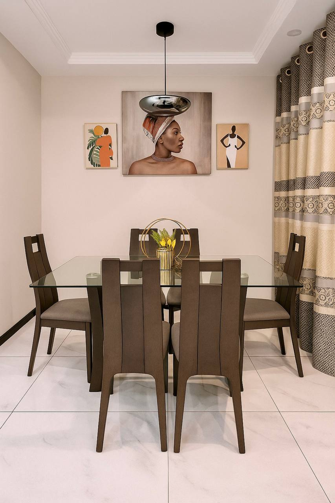
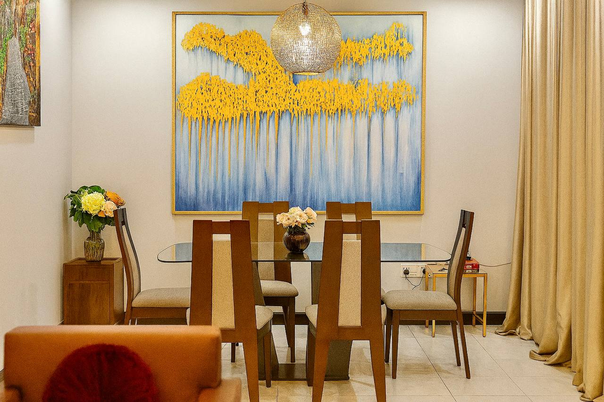
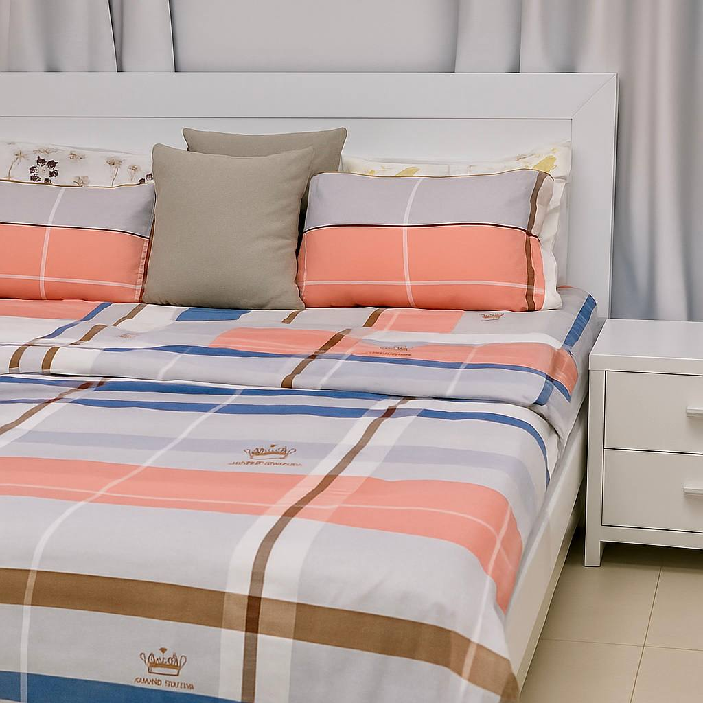

Home / Apartments
Furnished Apartments in Accra Near North Kaneshie
Browse available apartments for short stays, corporate assignments, family visits and extended accommodation at 12 Nii Darko Street.
Find the Right Apartment
Available Accommodation


Accommodation for Business, Family and Extended Stays
Jeffston Furnished Apartments serves business travellers, contractors, relocating professionals, couples and families who need private furnished accommodation in Accra. Contact the property to confirm current facilities, occupancy, rates and booking terms.